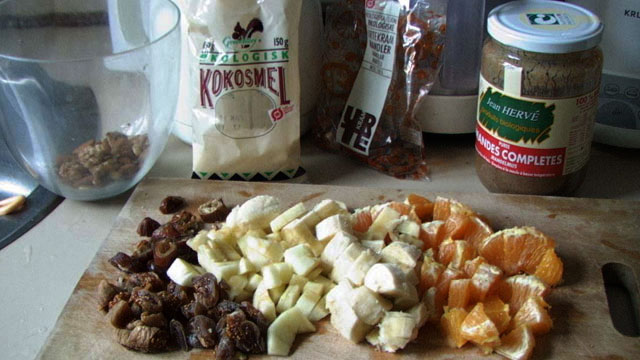

Miks Morgenmix
(frugtsalat)
‘Let thou food be thou medicine’
Hippokrates
To portioner
• 1 (moden) banan
• 1 appelsin (skrælles og eventuelle sten fjernes)
• 1 æble (skrælles eventuelt, og kernehuset fjernes)
• 2-4 tørrede abrikoser
• 2-3 tørrede figner
• 2-3 tørrede dadler (uden sten)
Skæres alle i bittesmå tern
Blandes grundigt i en skål med:
• 4-6 spsk kokosmel (helst ristet, så det er lysebrunt)
• 1 spsk mandelmel
• 1-2 spsk mandelpasta
• Eventuelt et par mandler eller 20 (eventuelt ristet, og hakket
i mindre stykker)
• Eventuelt lidt acaciehonning
• Eventuelt lidt valnødder, som i hånden er knust
til mindre stykker
• Appelsin kan erstattes eller suppleres med mango, blommer eller
fersken, alt efter humør og sæson.
Mandelpastaen er til gengæld uundværlig.
Hvis du er alene, så prop den ene halvdel i et syltetøjsglas
og spis den som mellemmåltid senere på dagen.
I et lukket syltetøjsglas og i køleskab kan frugtsalaten
holde sig i 24 timer.
Tip: Start med at blande appelsin og mandelpasta i skålen. Appelsinens
væde gør at mandelpastaen blødes op og lettere
røres ud.
Med denne frugtsalat, som typisk vejer 300-400 gram, har du lagt en
solid bund i forhold til at nå op på de anbefalede 600
gram frugt og grønt om dagen.
Om mandelpasta:
Det er ristede mandler, som er moset til en slags "nøddesmør",
nøjagtigt efter samme princip som man laver peanutbutter. Blot
en enkelt skefuld (rørt godt ud) giver hele frugtsalaten en
meget unik smag, man kan blive helt afhængig af.
I Frankrig koster 700 gram økologisk mandelpasta godt 80 kroner.
Herhjemme er det en del dyrere. Men det er alle pengene værd,
efter min mening.
En frugtsalat uden mandelpasta er ingenting.
Man kan købe det i små glas i helseforretningerne –
ihvertfald i København. Prisen er cirka 70 kroner for et glas.
I Frankrig producerer firmaet Herve (www.herve-sarl.fr)
en stribe fremragende nødde- og mandelmelprodukter (i glas).
Gå eksempelvis ind i en helsebutik og spørg efter "Puree
Anmandes Completes (Mandelmus)", næste gang du besøger
Frankrig. (Email: jean@herve-sarl.fr).
Se fotoet ovenfor.
Du kan også bestille dem over nettet, i så fald sælges
de i seks glas ad gangen.
KH Mik